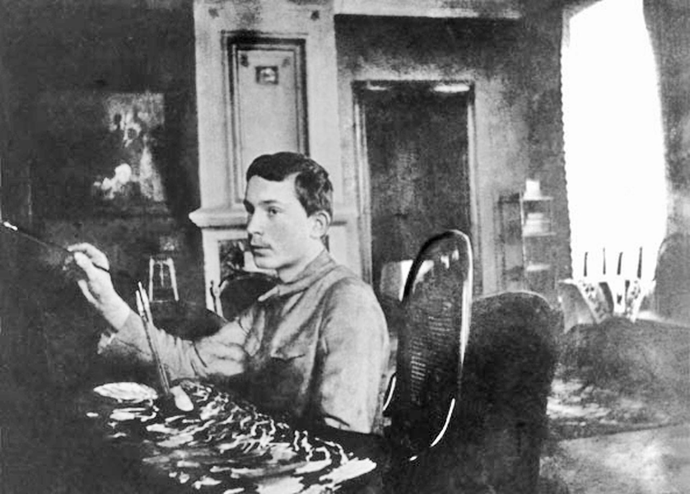
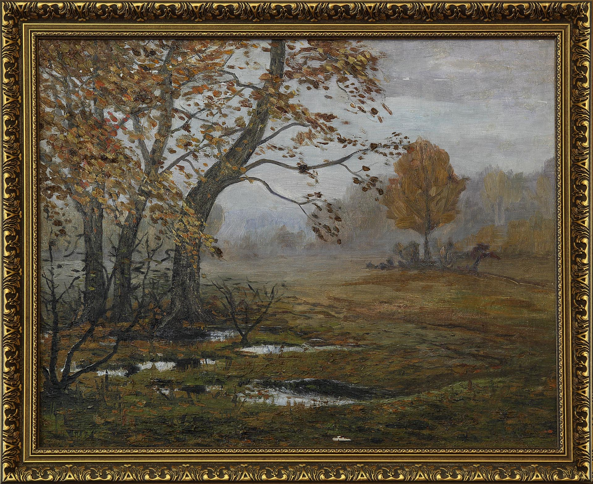
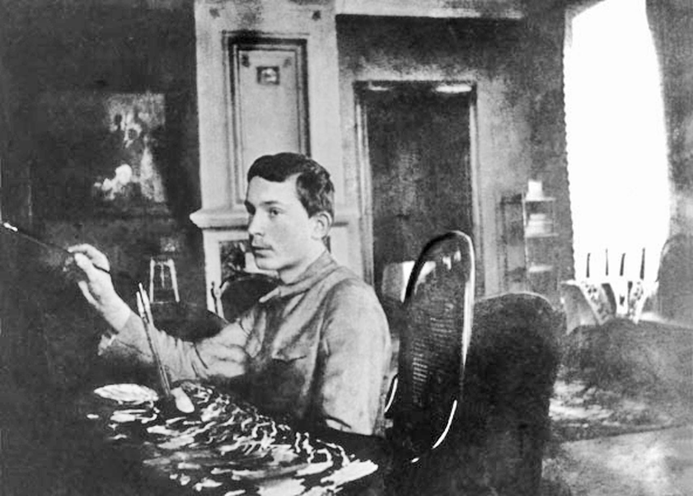
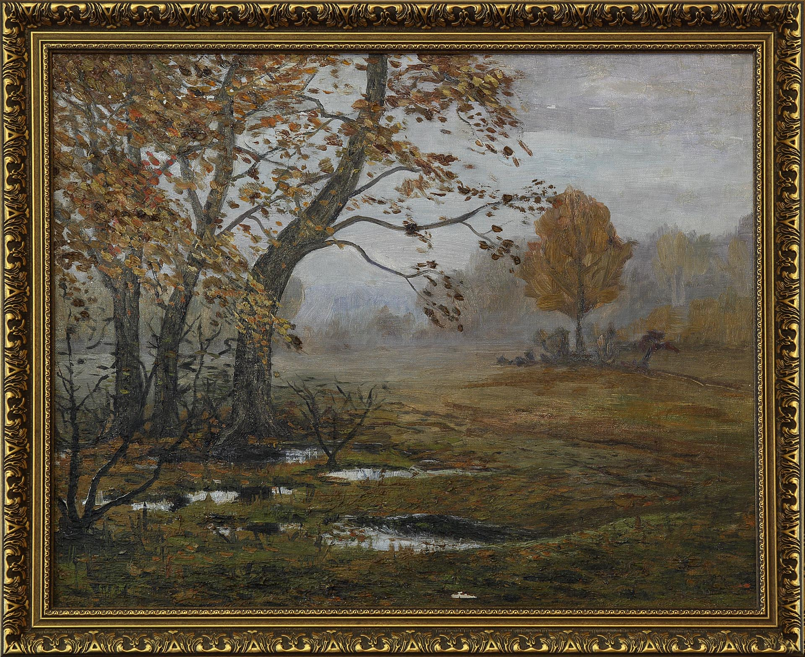

Комната Александра
Комната Александра была самой светлой и теплой. В ней находился камин, окна выходили на восток, навстречу «великолепному державному светилу». Здесь Чижевский начал первые наблюдения за Солнцем, он выходил с телескопом во двор, чтобы точнее определить периоды появления солнечных пятен и установить индекс солнечной активности.
Вовсе не случайно в его комнате стоял рояль. Чижевский обладал талантом виртуозного исполнителя и импровизатора, сам пробовал писать сонаты, концерты и даже симфонии. Вдохновлялся музыкой Чайковского, Шопена, Рахманинова, Скрябина, произведениями Венявского, Брамса, Сен-Санса. Помимо фортепьяно владел скрипкой и особенно дорожил подарком отца — великолепным инструментом, изготовленным итальянским мастером Дэвидом Тэхлером и принадлежавшем Каролю Липинскому, выдающемуся польскому скрипачу и композитору XIX века.
Увы, в 1930‑х годах, во время гонений и нужды, она была продана, но словно в ответ впоследствии родилась небольшая поэма Чижевского «Моя скрипка» с прощальными строками:
Простертый на земле ничком С душой в распаде и разрухе Я брал тебя – и под смычком Рождались огненные звуки. И вместе с ними воскресал Мой дух в пленительных надеждах, Я верил в будущность – вставал…
В гостиной нередко собирались друзья Александра и знакомые его двоюродных сестер Веры и Марии, проживавших в этом доме. Устраивались музыкальные и литературные вечера с танцами и чтением стихов.
Чижевский – поэт
Как это ни удивительно, в юные годы Чижевский считал себя не столько начинающим учёным, сколько поэтом и художником. Страстное увлечение поэзией и живописью сопровождало учёного на протяжении всей жизни: он принимался писать стихи или рисовать, как только выдавалось свободное от научной работы время. В 1915 году в Калуге Чижевский опубликовал первый поэтический сборник «Рoesies. Стихотворения 1914 года». Местные газеты охотно печатали его рассказы, стихи, очерки, рецензии на книги. В том же году появилось его стихотворение «Гиппократу», одно из самых ярких произведений русского «поэтического космизма» начала ХХ века:
Для нас едино все; и в малом и в большом, Кровь общая течет по жилам всей Вселенной…
Обращаясь через тысячелетия к великому античному мыслителю, врачу и естествоиспытателю, Чижевский пишет:
Мы дети космоса, и наш родимый дом Так спаян общностью и неразрывно прочен, Что чувствуем себя мы слитыми в одном, Что в каждой точке мир — весь мир сосредоточен… И жизнь, повсюду жизнь — в материи самой, В глубинах вещества — от края и до края Торжественно течет в борьбе с великой тьмой, Страдает и горит, нигде не умолкая.
Московская студенческая жизнь захватила его с головой. Он всё успевал: учился сразу в нескольких столичных вузах, защищал одну диссертацию за другой, приезжая в Калугу, углублялся в научные исследования. И при этом ухитрялся вести жизнь начинающего поэта и художника. В мемуарах «Вся жизнь» учёный вспоминал о тех годах: «Я метался из одной области в другую и наслаждался дивной способностью ума познавать. […] Ах, какая это была хорошая пора жизни, — молодой мозг стремился к познанию тайн природы и готов был ухватиться за любое явление в надежде извлечь из него что-либо таинственное, неведомое, никому еще не известное».
Зимою 1915–16 года в стенах Московского литературно-художественного кружка Чижевский познакомился с известными писателями и поэтами – И.Буниным, В.Брюсовым, А.Куприным, Л.Андреевым, А.Толстым, И.Северяниным. В литературных кругах к начинающему поэту из провинции отнеслись с благосклонным интересом. В юношеских стихах восторженного «солнцепоклонника» наряду с мотивами любовной лирики и «декадентского» одиночества билась глубокая мысль. Позже, в литературных кафе Москвы и Петербурга «Стойло Пегаса», «Домино», «Бродячая собака» он на время сблизился со столичной литературно-художественной богемой — с В.Маяковским, С.Есениным, А.Мариенгофом, В.Шершеневичем, Б.Пастернаком.
В 1918 году Чижевский опубликовал в Калуге литературный манифест «Академия поэзии», а в следующем — второй поэтический сборник «Тетрадь стихотворений. 1914–1918 годы». Валерий Брюсов встретил их появление похвалами истинного мэтра, в 1920 году назначил Чижевского литинструктором Наркомпроса по Калужской губернии. Вскоре его избрали председателем Калужского губернского отделения Всероссийского союза поэтов, и в этой должности он пребывал до окончательного отъезда в Москву.
О поэтическом даре Чижевского высоко отзывались Валерий Брюсов, Вячеслав Иванов, Максимилиан Волошин, Алексей Толстой, Павел Флоренский. Его зрелые стихи отличала классическая ясность, они были посвящены жизни природы, наполнены философскими размышлениями и религиозными исканиями, его любовную лирику согревали высокие искренние чувства.
Учёный-художник
В 1920-е годы Чижевский получил самое убедительное признание как поэт. Его научные открытия привлекали пристальное внимание учёных России и Европы. Но… он продолжал считать себя художником. К сожалению, множество картин и акварелей учёного оказались со временем утрачены. Слишком трагически сложилась его жизнь. Однако и на склоне лет, Чижевский признавался в воспоминаниях: «помимо моей профессии учёного-биофизика, я был и очевидно остаюсь, пока буду жив, — художником».
В течение полувека Чижевский создал несколько сотен живописных работ в разнообразной, по преимуществу, смешанной технике: от масла и темперы до акварели, гуаши, рисунков цветными карандашами. Он с детства занимался живописью, виртуозно владел кистью и вовсе не мог предположить, что в годы Гражданской войны будет вынужден писать картины и продавать их на калужском рынке, а на полученные деньги покупать дрова, корм подопытным крысам и оборудование для домашней лаборатории. О своей живописи тех лет Чижевский вспоминал с иронией: «Картины я писал по памяти, большие, по полтора-два метра в длину, яркие, иногда даже удачные, но почти всегда с дорогим моей душе легким оттенком импрессионизма…»
Большинство его акварелей были созданы позже, в свободно-безошибочной манере, рукою прирождённого мастера. Чижевскому была близка светоносность импрессионизма. Тем не менее, он никогда не писал «на пленэре». Его живописные работы, если их рассматривать вместе, предстают особым «научно-художественным осмыслением» природы, её различных состояний: от зачарованного покоя, умиротворенности всех линий и цветов («Спустился туман», 1945; «Залито луною», 1944; «Начало весны», 1945) до бурного всплеска жизненной активности, взрыва всех красок, динамики штрихов и пятен («Игра света», 1941; «Буйство осени», 1945; «Жаркий день», 1946).
Рисунки Чижевского тяготели к серийности. В своих пейзажах он стремился выразить сложнейшую гармонию мироздания — от галактики до живой клетки, выявить ритмику мировых процессов, как выявлял её средствами математической статистики, научного эксперимента, исторического исследования. Эстетика Чижевского — эстетика солнечного света, чистого, насыщенного грозовым электричеством воздуха.
На старых фотографиях комната Александра смотрится как небольшая картинная галерея. Полотна русских и западноевропейских мастеров развешаны почти до потолка. Среди них можно заметить акварели Чижевского и картины, написанных маслом.
Библиотека Чижевских
Комната Александра и кабинет отца были полны книг на многих языках. Подлинный интеллигент, разносторонне образованный учёный, Чижевский был многим обязан своей семейной библиотеке. Она насчитывала более пятнадцати тысяч томов на разных языках, включала энциклопедии, альбомы по живописи, издания по литературе, географии, астрономии, математике, военным наукам, истории научных открытий и изобретений. Особый интерес представляют несколько книг К.Э.Циолковского и, в частности, вышедшая в Калуге в 1924 году брошюра «Ракета в космическое пространство». Предисловие к ней на немецком языке написал Чижевский, а часть тиража за свой счёт разослал за границу, утверждая таким образом мировой приоритет основоположника теории космонавтики. Многие книги Чижевского были отмечены экслибрисом, который он создал в 1915 году. В семейной библиотеке, по свидетельству Чижевского, хранилось рукописное Евангелие XV века с заставками, выполненными золотой и серебряной красками и автографом патриарха Тихона. В 1930-е годы эта библиотека находилась в его квартире на Тверском бульваре, но была конфискована при аресте учёного. Дальнейшая её судьба неизвестна.
 


